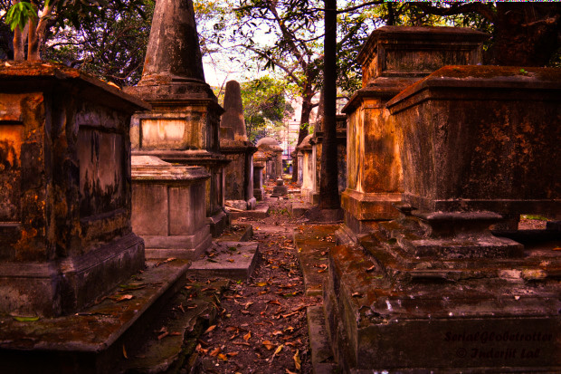
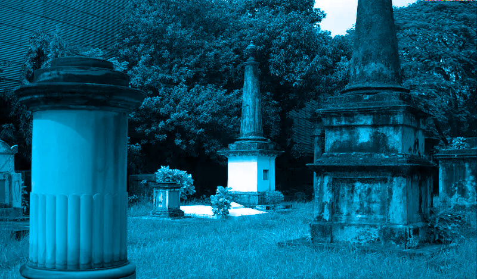

This is one of the oldest graveyards of Kolkata (then Calcutta) built in 1767. The burial ground possesses a bizarre beauty of its own with unique serenity, tall vegetation and age-old graves, mostly of British soldiers. It is one of the most haunted places in Park Street Kolkata.
People said to The name graveyard is enough for goosebumps. Reported incidents like spotting of hazy shadows on the wall and hearing eerie sounds further accentuate the weird feeling of unnatural presence around.
A group of friends visited the cemetery for photography. Suddenly the photographer and his friends felt dizziness and breathlessness. Even a few photographs captured some creepy shadows. Spine chilling, isn’t it? There have been many similar real ghost incidents in Kolkata pertaining to this graveyard.
The archaeological survey of India discovered the mystery of the Hidden Chamber at the National library in the year 2010. It is a place in the 250 years old premises about which people had no clue. The room has no openings or even trap doors. This untouched place for around two centuries definitely brings an eerie feeling. It has been rumoured that the Chamber was a torture room in the times of the British rule in India or maybe a sealed tomb for the souls who were unfortunate.
Another Story
1.It is quite common for us to click photographs whenever we visit a tourist spot in the city. So did a group of friends who visited the cemetery but that was followed by a really strange occurrence. A group of healthy friends suddenly fell ill and one of them even had an asthma attack. This famous tourist spot in the city is the oldest one among all the burial grounds in Kolkata built in 1767, and also the spookiest one. Paranormal activities like shadows moving, cameras dysfunctioning or capturing eerie images and health deteriorating have been witnessed in this place. People staying nearby are so afraid of this haunted place that they keep their windows shut at all times.
2.Located in the Park Street area in Kolkata which is known for its pubs and food joints, this cemetery was one of the largest non-church Christian cemeteries outside Europe and America. Today, it is no longer in use and is a heritage site. The tombs are done up in gothic and Indo-Saracenic styles and there are about 1600 of them in the cemetery. The memorials too are known for their imposing architecture replete with sculptures and fine details. People flock here to see the beauty of this place and observe the epitaphs of people gone by. It makes for a beautiful capture for a photographer. Even though the cemetery holds a historical importance and is visited by many every day, it is believed to be haunted too.
Many people have felt dizzy or fell sick after coming here, people have captured weird structures on their cameras or complained of breathlessness even though they don’t have any breathing problems. Some have been spooked later after a visit here. There are others who haven’t felt anything but those who have experienced something strange cannot shake off the eerie feeling.
THE END
Thanks,
Feel The Fear